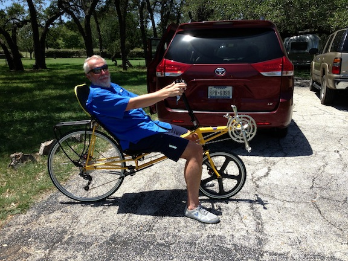

Picked up the P-38 from Easy Street Recumbents
03 Aug 2013

Before having the bike shop up on the fairing I decided to ride the bare F-40 as a P-38 for a couple of days to get a feel for the bike.
The P-38 is a very compact bike - fit easily into the back of the minivan.
I just cruised around the neighborhood for about 40 minutes getting used to starting, stopping, clipping and unclipping.
Very comfortable bike. So far I’m liking it better than my Musashi.